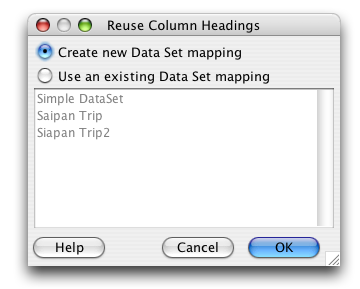
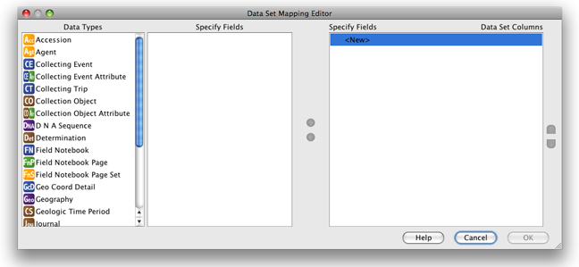
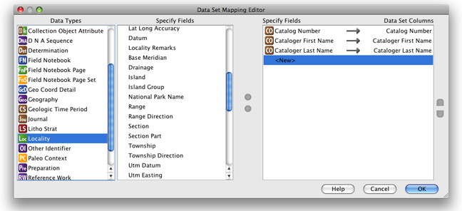

The first step in creating a New Data Set is to choose the columns that will be included in the new Data Set. This is achieved by either copying the column headings from an existing Data Set or creating one from the list of fields available in Specify.
If a Data Set exists with the same column headings, or map, needed for the new Data Set, simply drag the Data Set item onto the New Data Set action on the Sidebar. This eliminates the need to choose a Data Set from a file dialog.
Note: Data Sets that are open in the Workspace are disabled in the Sidebar. To copy the column headings from an existing Data Set it must be first be closed.
To create a new Data Set and choose new column headings, or to bypass the drag and drop feature and choose a Data Set to reuse, click the New Data Set item on the Sidebar. The following dialog will appear:

New Data Set
To copy column headings from an existing Data Set select the 'Use an existing Data Set mapping' button and choose the Data Set from the list provided. The Data Set Properties dialog will appear which allows the new Data Set to be named and described.
To select new column headings select the 'Create new Data Set mapping' button and click 'OK'. The Data Set Mapping Editor will appear:

Data Set Mapping Editor
The Data Set Mapping Editor allows columns to be mapped, unmapped and reordered using the following buttons:
| map | adds the field to the column list | |
| unmap | removes the field from the list of columns | |
| reorder up | moves the selected field up | |
| reorder down | moves the selected field down | |
| link | identifies that the field is linked to the column |
The WorkBench provides a list of Specify fields to use as column headers in the new Data Set. This list is organized by Data Types.
To add a column heading:

Data Set Mapping Editor with one column added
Once the Data Set Column list is complete click the 'OK' button. The Data Set Properties dialog will appear which allows the new Data Set to be named and described.
The edit the map see Edit Data Set Mapping.